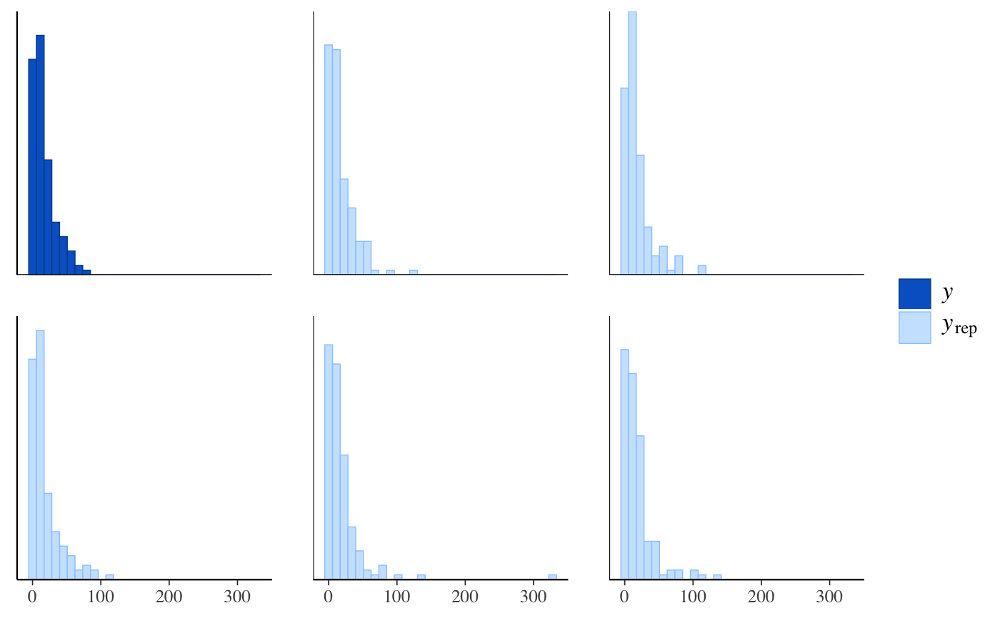
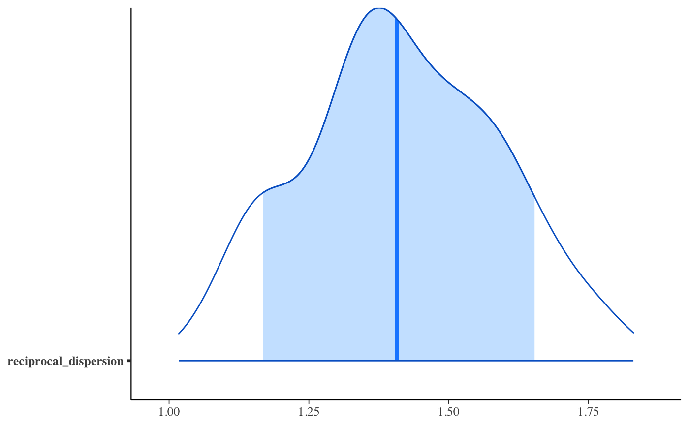

Generalized linear modeling with optional prior distributions for the
coefficients, intercept, and auxiliary parameters.
Generalized linear modeling with optional prior distributions for the
coefficients, intercept, and auxiliary parameters.
stan_glm( formula, family = gaussian(), data, weights, subset, na.action = NULL, offset = NULL, model = TRUE, x = FALSE, y = TRUE, contrasts = NULL, ..., prior = default_prior_coef(family), prior_intercept = default_prior_intercept(family), prior_aux = exponential(autoscale = TRUE), prior_PD = FALSE, algorithm = c("sampling", "optimizing", "meanfield", "fullrank"), mean_PPD = algorithm != "optimizing", adapt_delta = NULL, QR = FALSE, sparse = FALSE ) stan_glm.nb( formula, data, weights, subset, na.action = NULL, offset = NULL, model = TRUE, x = FALSE, y = TRUE, contrasts = NULL, link = "log", ..., prior = default_prior_coef(family), prior_intercept = default_prior_intercept(family), prior_aux = exponential(autoscale = TRUE), prior_PD = FALSE, algorithm = c("sampling", "optimizing", "meanfield", "fullrank"), mean_PPD = algorithm != "optimizing", adapt_delta = NULL, QR = FALSE ) stan_glm.fit( x, y, weights = rep(1, NROW(y)), offset = rep(0, NROW(y)), family = gaussian(), ..., prior = default_prior_coef(family), prior_intercept = default_prior_intercept(family), prior_aux = exponential(autoscale = TRUE), prior_smooth = exponential(autoscale = FALSE), prior_ops = NULL, group = list(), prior_PD = FALSE, algorithm = c("sampling", "optimizing", "meanfield", "fullrank"), mean_PPD = algorithm != "optimizing", adapt_delta = NULL, QR = FALSE, sparse = FALSE, importance_resampling = algorithm != "sampling", keep_every = algorithm != "sampling" )
Arguments
| formula, data, subset | Same as |
||||||||||
|---|---|---|---|---|---|---|---|---|---|---|---|
| family | Same as |
||||||||||
| na.action, contrasts | Same as |
||||||||||
| model, offset, weights | Same as |
||||||||||
| x | In |
||||||||||
| y | In |
||||||||||
| ... | Further arguments passed to the function in the rstan
package ( |
||||||||||
| prior | The prior distribution for the (non-hierarchical) regression coefficients. The default priors are described in the vignette
Prior
Distributions for rstanarm Models.
If not using the default,
See the priors help page for details on the families and
how to specify the arguments for all of the functions in the table above.
To omit a prior ---i.e., to use a flat (improper) uniform prior---
Note: Unless |
||||||||||
| prior_intercept | The prior distribution for the intercept (after centering all predictors, see note below). The default prior is described in the vignette
Prior
Distributions for rstanarm Models.
If not using the default, Note: If using a dense representation of the design matrix
---i.e., if the |
||||||||||
| prior_aux | The prior distribution for the "auxiliary" parameter (if
applicable). The "auxiliary" parameter refers to a different parameter
depending on the The default prior is described in the vignette
Prior
Distributions for rstanarm Models.
If not using the default, |
||||||||||
| prior_PD | A logical scalar (defaulting to |
||||||||||
| algorithm | A string (possibly abbreviated) indicating the
estimation approach to use. Can be |
||||||||||
| mean_PPD | A logical value indicating whether the sample mean of the
posterior predictive distribution of the outcome should be calculated in
the |
||||||||||
| adapt_delta | Only relevant if |
||||||||||
| QR | A logical scalar defaulting to |
||||||||||
| sparse | A logical scalar (defaulting to |
||||||||||
| link | For |
||||||||||
| prior_smooth | The prior distribution for the hyperparameters in GAMs, with lower values yielding less flexible smooth functions.
|
||||||||||
| prior_ops | Deprecated. See rstanarm-deprecated for details. |
||||||||||
| group | A list, possibly of length zero (the default), but otherwise
having the structure of that produced by |
||||||||||
| importance_resampling | Logical scalar indicating whether to use
importance resampling when approximating the posterior distribution with
a multivariate normal around the posterior mode, which only applies
when |
||||||||||
| keep_every | Positive integer, which defaults to 1, but can be higher
in order to "thin" the importance sampling realizations. Applies only
when |
Value
A stanreg object is returned
for stan_glm, stan_glm.nb.
A stanfit object (or a slightly modified
stanfit object) is returned if stan_glm.fit is called directly.
Details
The stan_glm function is similar in syntax to
glm but rather than performing maximum likelihood
estimation of generalized linear models, full Bayesian estimation is
performed (if algorithm is "sampling") via MCMC. The Bayesian
model adds priors (independent by default) on the coefficients of the GLM.
The stan_glm function calls the workhorse stan_glm.fit
function, but it is also possible to call the latter directly.
The stan_glm.nb function, which takes the extra argument
link, is a wrapper for stan_glm with family =
neg_binomial_2(link).
References
Gelman, A. and Hill, J. (2007). Data Analysis Using Regression and Multilevel/Hierarchical Models. Cambridge University Press, Cambridge, UK. (Ch. 3-6)
Muth, C., Oravecz, Z., and Gabry, J. (2018) User-friendly Bayesian regression modeling: A tutorial with rstanarm and shinystan. The Quantitative Methods for Psychology. 14(2), 99--119. https://www.tqmp.org/RegularArticles/vol14-2/p099/p099.pdf
See also
stanreg-methods and
glm.
The various vignettes for stan_glm at
http://mc-stan.org/rstanarm/articles/.
Examples
if (!grepl("^sparc", R.version$platform)) { ### Linear regression mtcars$mpg10 <- mtcars$mpg / 10 fit <- stan_glm( mpg10 ~ wt + cyl + am, data = mtcars, QR = TRUE, # for speed of example only (default is "sampling") algorithm = "fullrank", refresh = 0 ) plot(fit, prob = 0.5) plot(fit, prob = 0.5, pars = "beta") plot(fit, "hist", pars = "sigma") }#>#> switch arsenic dist assoc educ #> 1 1 2.36 16.826 0 0 #> 2 1 0.71 47.322 0 0 #> 3 0 2.07 20.967 0 10 #> 4 1 1.15 21.486 0 12 #> 5 1 1.10 40.874 1 14 #> 6 1 3.90 69.518 1 9wells$dist100 <- wells$dist / 100 fit2 <- stan_glm( switch ~ dist100 + arsenic, data = wells, family = binomial(link = "logit"), prior_intercept = normal(0, 10), QR = TRUE, refresh = 0, # for speed of example only chains = 2, iter = 200 )#> Warning: Bulk Effective Samples Size (ESS) is too low, indicating posterior means and medians may be unreliable. #> Running the chains for more iterations may help. See #> http://mc-stan.org/misc/warnings.html#bulk-ess#> Warning: Tail Effective Samples Size (ESS) is too low, indicating posterior variances and tail quantiles may be unreliable. #> Running the chains for more iterations may help. See #> http://mc-stan.org/misc/warnings.html#tail-essprint(fit2)#> stan_glm #> family: binomial [logit] #> formula: switch ~ dist100 + arsenic #> observations: 3020 #> predictors: 3 #> ------ #> Median MAD_SD #> (Intercept) 0.0 0.1 #> dist100 -0.9 0.1 #> arsenic 0.5 0.0 #> #> ------ #> * For help interpreting the printed output see ?print.stanreg #> * For info on the priors used see ?prior_summary.stanregprior_summary(fit2)#> Priors for model 'fit2' #> ------ #> Intercept (after predictors centered) #> ~ normal(location = 0, scale = 10) #> #> Coefficients (in Q-space) #> ~ normal(location = [0,0], scale = [2.5,2.5]) #> ------ #> See help('prior_summary.stanreg') for more details# ?bayesplot::mcmc_areas plot(fit2, plotfun = "areas", prob = 0.9, pars = c("(Intercept)", "arsenic"))### Poisson regression (example from help("glm")) count_data <- data.frame( counts = c(18,17,15,20,10,20,25,13,12), outcome = gl(3,1,9), treatment = gl(3,3) ) fit3 <- stan_glm( counts ~ outcome + treatment, data = count_data, family = poisson(link="log"), prior = normal(0, 2), refresh = 0, # for speed of example only chains = 2, iter = 250 )#> Warning: Bulk Effective Samples Size (ESS) is too low, indicating posterior means and medians may be unreliable. #> Running the chains for more iterations may help. See #> http://mc-stan.org/misc/warnings.html#bulk-ess#> Warning: Tail Effective Samples Size (ESS) is too low, indicating posterior variances and tail quantiles may be unreliable. #> Running the chains for more iterations may help. See #> http://mc-stan.org/misc/warnings.html#tail-essprint(fit3)#> stan_glm #> family: poisson [log] #> formula: counts ~ outcome + treatment #> observations: 9 #> predictors: 5 #> ------ #> Median MAD_SD #> (Intercept) 3.0 0.2 #> outcome2 -0.5 0.2 #> outcome3 -0.3 0.2 #> treatment2 0.0 0.2 #> treatment3 0.0 0.2 #> #> ------ #> * For help interpreting the printed output see ?print.stanreg #> * For info on the priors used see ?prior_summary.stanreg#> #>### Gamma regression (example from help("glm")) clotting <- data.frame(log_u = log(c(5,10,15,20,30,40,60,80,100)), lot1 = c(118,58,42,35,27,25,21,19,18), lot2 = c(69,35,26,21,18,16,13,12,12)) fit4 <- stan_glm( lot1 ~ log_u, data = clotting, family = Gamma(link="log"), iter = 500, # for speed of example only refresh = 0 )#> Warning: Bulk Effective Samples Size (ESS) is too low, indicating posterior means and medians may be unreliable. #> Running the chains for more iterations may help. See #> http://mc-stan.org/misc/warnings.html#bulk-ess#> stan_glm #> family: Gamma [log] #> formula: lot1 ~ log_u #> observations: 9 #> predictors: 2 #> ------ #> Median MAD_SD #> (Intercept) 5.53 0.55 #> log_u -0.60 0.16 #> #> Auxiliary parameter(s): #> Median MAD_SD #> shape 4.25 1.91 #> #> ------ #> * For help interpreting the printed output see ?print.stanreg #> * For info on the priors used see ?prior_summary.stanreg#> Warning: Bulk Effective Samples Size (ESS) is too low, indicating posterior means and medians may be unreliable. #> Running the chains for more iterations may help. See #> http://mc-stan.org/misc/warnings.html#bulk-ess#> Warning: Tail Effective Samples Size (ESS) is too low, indicating posterior variances and tail quantiles may be unreliable. #> Running the chains for more iterations may help. See #> http://mc-stan.org/misc/warnings.html#tail-ess# ?bayesplot::ppc_dens_overlay bayesplot::bayesplot_grid( pp_check(fit4, seed = 123), pp_check(fit5, seed = 123), titles = c("lot1", "lot2") )### Negative binomial regression fit6 <- stan_glm.nb( Days ~ Sex/(Age + Eth*Lrn), data = MASS::quine, link = "log", prior_aux = exponential(1.5, autoscale=TRUE), chains = 2, iter = 200, # for speed of example only refresh = 0 )#> Warning: The largest R-hat is 1.09, indicating chains have not mixed. #> Running the chains for more iterations may help. See #> http://mc-stan.org/misc/warnings.html#r-hat#> Warning: Bulk Effective Samples Size (ESS) is too low, indicating posterior means and medians may be unreliable. #> Running the chains for more iterations may help. See #> http://mc-stan.org/misc/warnings.html#bulk-ess#> Warning: Tail Effective Samples Size (ESS) is too low, indicating posterior variances and tail quantiles may be unreliable. #> Running the chains for more iterations may help. See #> http://mc-stan.org/misc/warnings.html#tail-essprior_summary(fit6)#> Priors for model 'fit6' #> ------ #> Intercept (after predictors centered) #> ~ normal(location = 0, scale = 2.5) #> #> Coefficients #> Specified prior: #> ~ normal(location = [0,0,0,...], scale = [2.5,2.5,2.5,...]) #> Adjusted prior: #> ~ normal(location = [0,0,0,...], scale = [5.01,6.02,8.46,...]) #> #> Auxiliary (reciprocal_dispersion) #> ~ exponential(rate = 1.5) #> ------ #> See help('prior_summary.stanreg') for more details#># 80% interval of estimated reciprocal_dispersion parameter posterior_interval(fit6, pars = "reciprocal_dispersion", prob = 0.8)#> 10% 90% #> reciprocal_dispersion 1.168184 1.653617# }